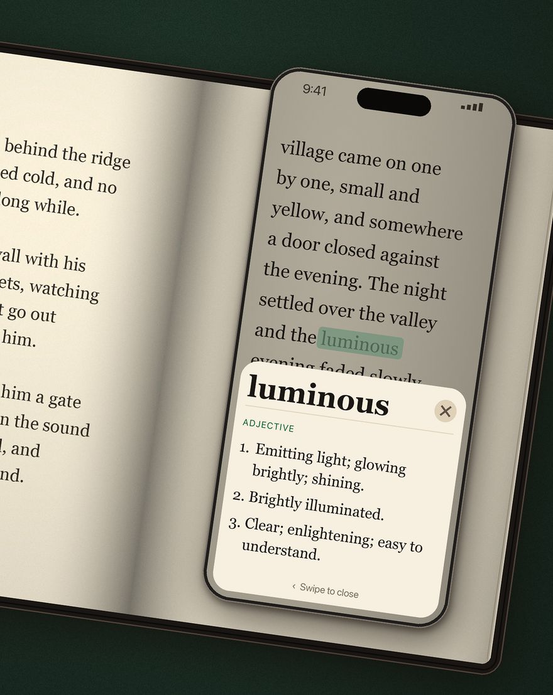

Booktionary — dicionário com câmera para livros de papel
Uma compra. Todos os pacotes de idiomas incluídos. Sem assinatura nem compras no app.

Consulte uma palavra num livro de papel com a câmera do iPhone e continue lendo. Coloque o anel central sobre a palavra e mantenha o telefone estável por cerca de um segundo. Um destaque verde percorre a palavra e a definição aparece. Deslize o painel para voltar ao livro, sem digitar a palavra.
Escolha o idioma do livro: inglês, francês, espanhol, português, italiano ou alemão. O dicionário inglês já está incluído no app; baixe os outros cinco quando precisar. As formas flexionadas podem levar à entrada do dicionário. A interface também está disponível nesses seis idiomas.
Para livros em inglês, você pode adicionar traduções para francês, espanhol, português, italiano ou alemão com pacotes separados. A cobertura varia conforme a palavra. Livros nos outros cinco idiomas mostram definições no idioma do livro, sem tradução. As definições e equivalentes vêm do Wiktionary.
Uma compra inclui os seis dicionários e os pacotes de tradução disponíveis. Sem assinatura nem compras no app. É preciso internet para consultar o catálogo e baixar os pacotes; depois de instalados, as consultas funcionam offline. As imagens da câmera e as palavras reconhecidas ficam no iPhone. Sem conta, análise de uso nem rastreamento. Requer iOS 17 ou posterior; apenas iPhone. A App Store mostra o preço da sua região.
Dicas e suporte
Uma boa iluminação ajuda. Aproxime o telefone se o texto não for reconhecido e escolha o idioma do livro antes de começar. Para verificar o uso offline, instale os recursos e consulte uma palavra em modo avião.
Precisa de ajuda? Escreva para fredddv@hotmail.com com o modelo do iPhone, a versão do iOS, o idioma do livro e o problema.